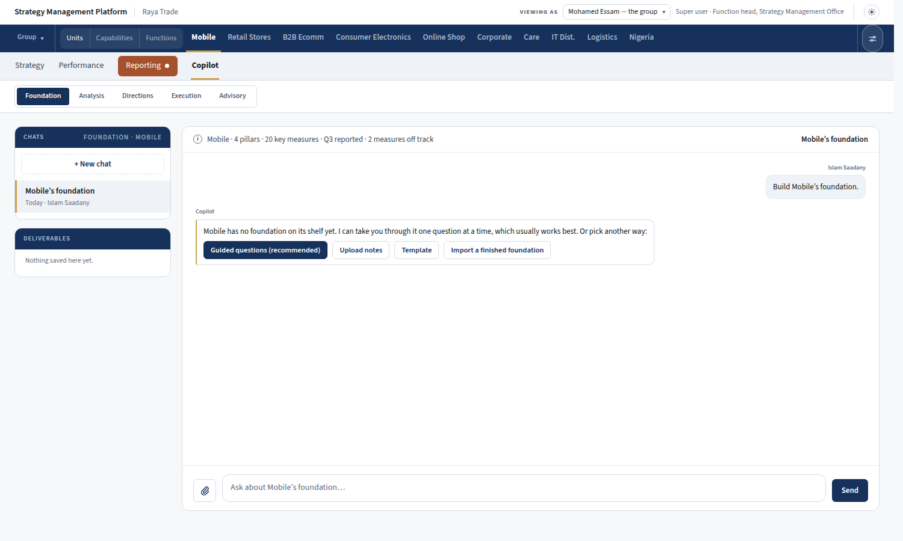
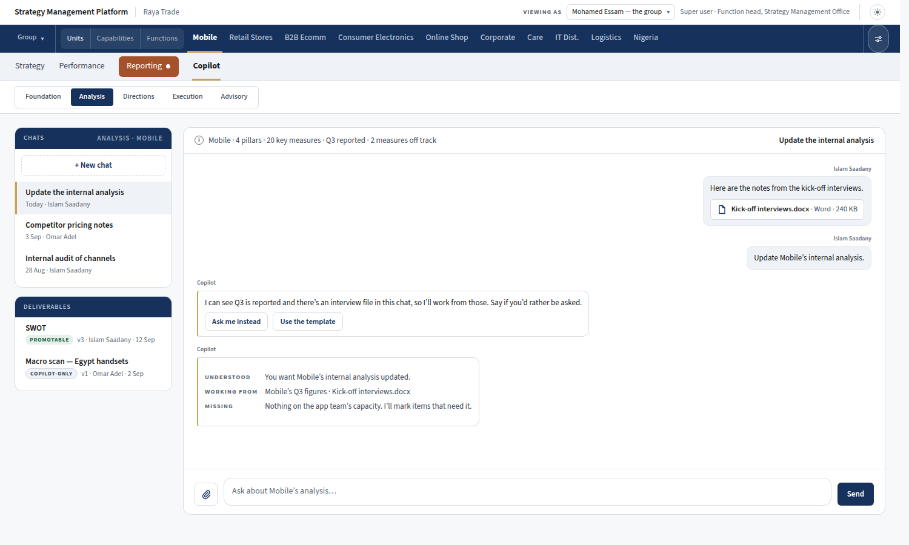
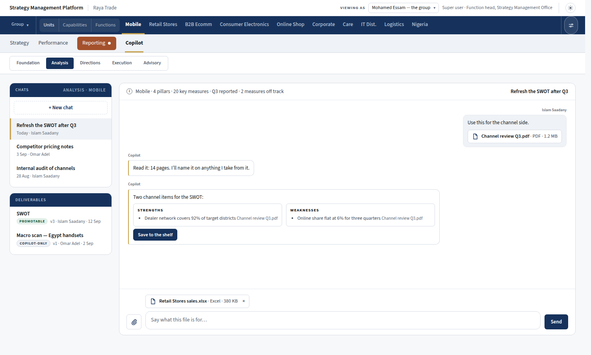
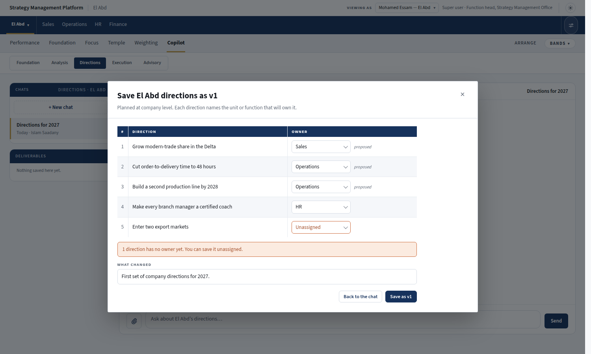
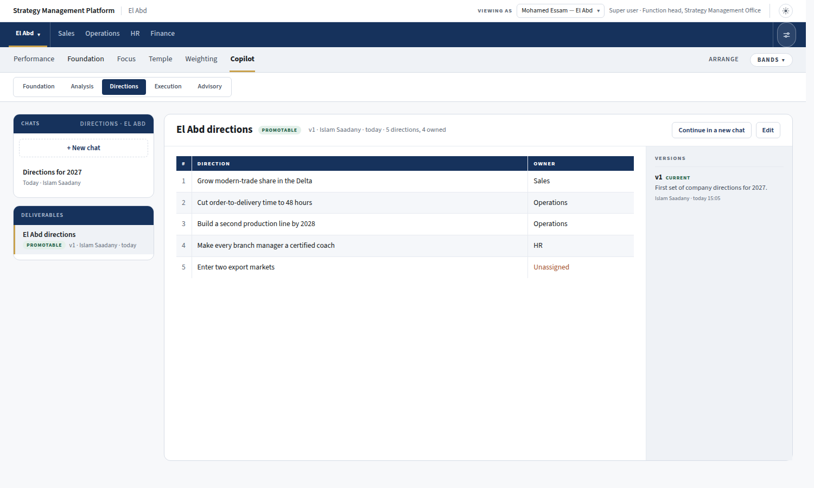
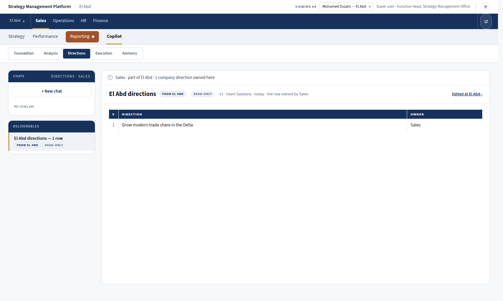

Four new pieces on top of the first mockup. Each screen is the running platform with the Copilot drawn in. The content is invented to show the shape. Nothing here is built yet.
You say what you want. The AI answers with the ways it can build it, as buttons under its reply, with the one it recommends filled in. There is no picker in front of the chat.

Here Q3 is reported and an interview file is already in the chat, so the AI says which way it will go and starts. Two buttons let you send it another way.

The paperclip beside the box takes a Word, PDF or Excel file. A sent file shows as a chip with its name, type and size, and a file waiting to be sent sits above the box with a cross to remove it. Anything the AI takes from a file is tagged with the file's name.

At a client that plans as one company, the directions stay one deliverable. When you save, each row shows the unit or function that will own it. The AI's suggestions are marked "proposed", you can change any of them, and a row can stay unassigned.

Opened later, the deliverable shows each direction with its owner, and an unassigned row says so. The owner can be changed in place when editing.

In Sales' own Copilot, the direction Sales owns appears on its shelf, marked as coming from El Abd and read-only. The link takes you to El Abd, where it is edited.
